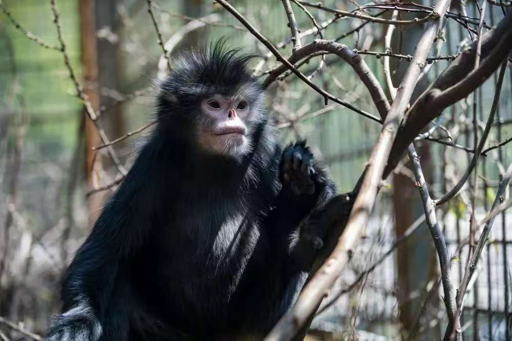

📇
基础名片
Basic Info
🐒 怒江金丝猴
学名：Rhinopithecus strykeri 别称：黑仰鼻猴、缅甸金丝猴
中国特有灵长类，猴科仰鼻猴属；
保护级别：国家一级重点保护动物，极危（CR）
学名：Rhinopithecus strykeri 别称：黑仰鼻猴、缅甸金丝猴
中国特有灵长类，猴科仰鼻猴属；
保护级别：国家一级重点保护动物，极危（CR）
✨
外形特征
Morphology
外形特征
通体黑色，头顶有一撮尖状黑色冠毛
面部白色，鼻子上翘（仰鼻），嘴唇粉红色
耳缘、下巴、会阴处有白色斑块 ，尾巴极长，几乎等于体长
通体黑色，头顶有一撮尖状黑色冠毛
面部白色，鼻子上翘（仰鼻），嘴唇粉红色
耳缘、下巴、会阴处有白色斑块 ，尾巴极长，几乎等于体长
🌍
分布与栖息
Habitat
分布与栖息
仅存于云南怒江高黎贡山（中国）和 缅甸东北部 ；
栖息在海拔1700–3700米的原始常绿阔叶林、针阔混交林； 分布区极度狭窄、碎片化
仅存于云南怒江高黎贡山（中国）和 缅甸东北部 ；
栖息在海拔1700–3700米的原始常绿阔叶林、针阔混交林； 分布区极度狭窄、碎片化
🍃
习性与繁殖
habits
习性与繁殖
树栖，极少下地，群居（10–50只）；
主食：树叶、嫩芽、果实、苔藓、竹笋；
行动敏捷，叫声低沉，警惕性极高
树栖，极少下地，群居（10–50只）；
主食：树叶、嫩芽、果实、苔藓、竹笋；
行动敏捷，叫声低沉，警惕性极高
🛡️
保护现状与措施
measure
保护现状与措施
2010年首次被科学界正式命名 ，全球总数仅约300–500只 ，中国境内约200只，是世界最珍稀灵长类之一
核心保护： 列入国家一级保护动物 ，建立高黎贡山国家级自然保护区
严格禁猎、栖息地修复、跨境联合保护
威胁：栖息地破碎、气候变化、人猴冲突仍存在
2010年首次被科学界正式命名 ，全球总数仅约300–500只 ，中国境内约200只，是世界最珍稀灵长类之一
核心保护： 列入国家一级保护动物 ，建立高黎贡山国家级自然保护区
严格禁猎、栖息地修复、跨境联合保护
威胁：栖息地破碎、气候变化、人猴冲突仍存在

怒江金丝猴种群数量变化监测
怒江金丝猴种群数量增长趋势